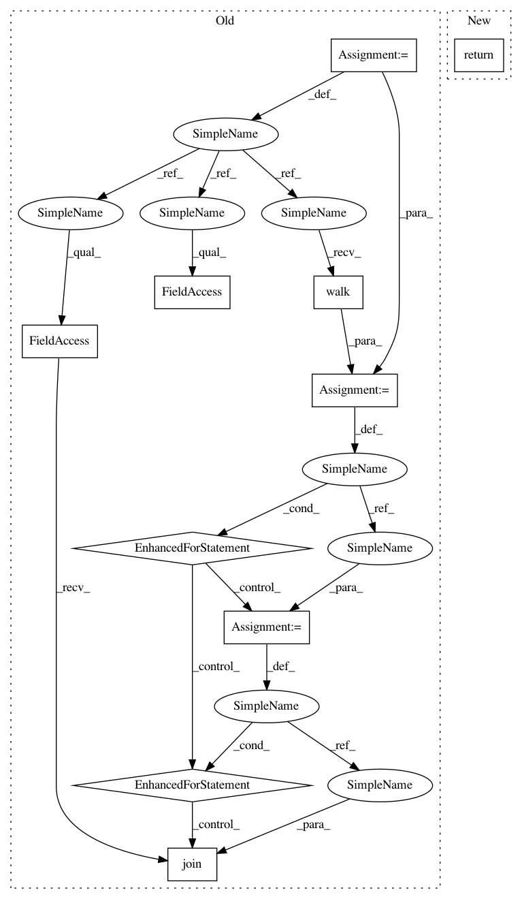

66348a9259bc034d0f6b21cfb554f8b2f0af94b0,tools/triage_tests.py,,find_failing_tests,#Any#Any#,327
Before Change
`-failed-diff` at the end of the basename.
entries = []
for root, dirs, files in os.walk(result_images):
for fname in files:
basename, ext = os.path.splitext(fname)
if basename.endswith("-failed-diff"):
path = os.path.join(root, fname)
entry = Entry(path, result_images, source)
entries.append(entry)
entries.sort(key=lambda x: x.name)
return entries
After Change
Find all of the failing tests by looking for files with
`-failed-diff` at the end of the basename.
return sorted(
(Entry(path, result_images, source)
for path in Path(result_images).glob("**/*-failed-diff.*")),
key=lambda x: x.name)
def launch(result_images, source):
In pattern: SUPERPATTERN
Frequency: 3
Non-data size: 10
Instances
Project Name: matplotlib/matplotlib
Commit Name: 66348a9259bc034d0f6b21cfb554f8b2f0af94b0
Time: 2018-03-23
Author: anntzer.lee@gmail.com
File Name: tools/triage_tests.py
Class Name:
Method Name: find_failing_tests
Project Name: mlflow/mlflow
Commit Name: f6c83fb64a368aa529dc6d7335cc65c682acdda3
Time: 2019-07-28
Author: 52183359+ankitmathur-db@users.noreply.github.com
File Name: mlflow/store/file_store.py
Class Name: FileStore
Method Name: _get_run_files
Project Name: pantsbuild/pants
Commit Name: da0989f9f00cf2a9eca58410a721d23a1fdf72bb
Time: 2019-08-19
Author: ericarellano@me.com
File Name: contrib/python/tests/python/pants_test/contrib/python/checks/tasks/checkstyle/test_checkstyle.py
Class Name: CheckstyleTest
Method Name: build_checker_wheel
Project Name: matplotlib/matplotlib
Commit Name: 66348a9259bc034d0f6b21cfb554f8b2f0af94b0
Time: 2018-03-23
Author: anntzer.lee@gmail.com
File Name: tools/triage_tests.py
Class Name:
Method Name: find_failing_tests